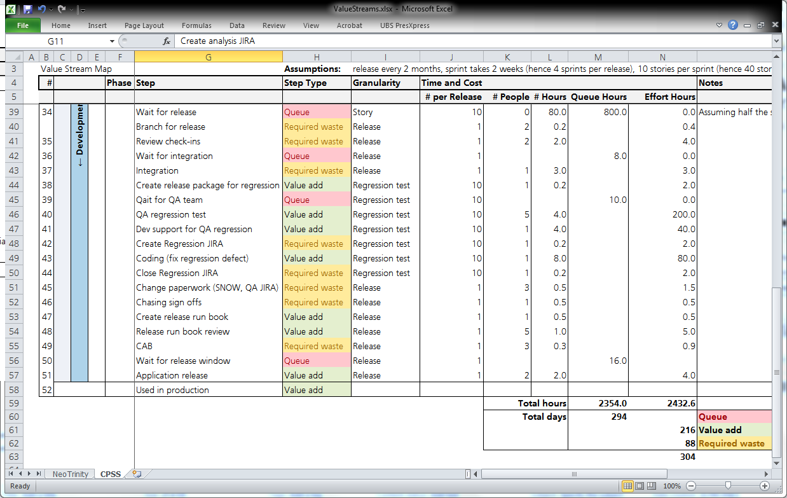
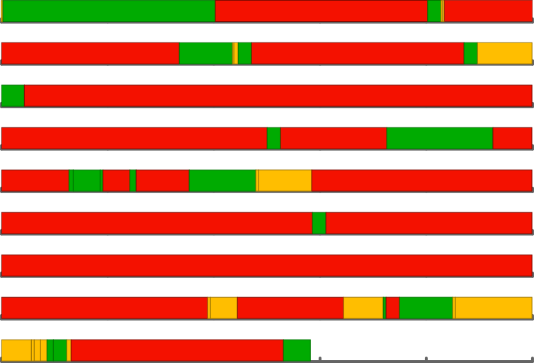
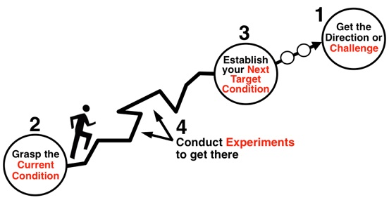

Let's Build a
Value Stream
Joe Schmetzer • @tumbarumba@techhub.social
Form Groups
- Split into groups of no more than 6 people
- Warm up: Introduce yourselves!
- What do you do?
- What are your hobbies, interests?
- Something unusual about yourself?
- 3 minutes!
- Decide/elect a value stream expert
- 1 minute!
Build the Value Stream
- Name the stream (e.g. Add a Feature to Geronimo)
- Start at the end (what is the value?)
- Start a loop:
- Ask the question:
- What must happen to allow this?
- Write that down on a card
- Repeat
- Ask the question:
- 20 minutes!
Review
- What's missing?
- For each card:
- How many people?
- What roles?
- How long?
- It is value add or overhead?
- What about queues? Add them in!
Effort Analysis
Big Visible Value Stream

Waste, Inefficiencies, Delays?
Driving Improvements
- Metrics?
- Vision?
- Experiments
Improvements can Fund Themselves!
- Standard economic measure:
- Life-Cycle Profits
- Economic model:
- product value
- product cost
- development expense
- cycle time
- risk
Toyota Improvement Kata
*Image from The Improvement Kata, by Mike Rother